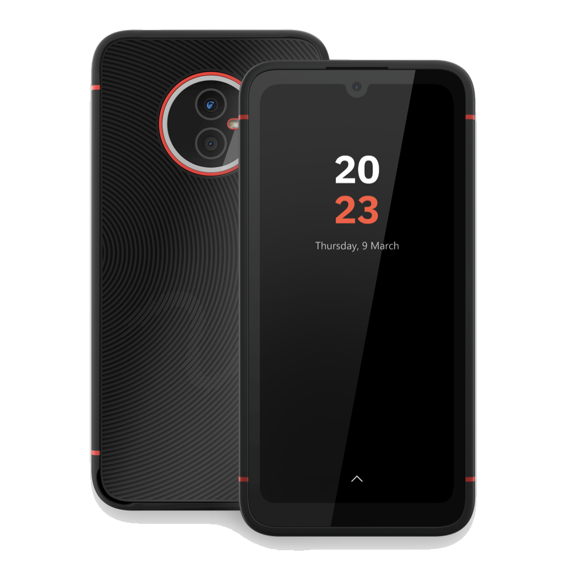

Volla Phone X23 (volla-vidofnir)
Jump to navigation
Jump to search
|  | |
| Manufacturer | Volla |
|---|---|
| Name | Phone X23 |
| Codename | volla-vidofnir |
| Released | 2023 |
| Category | testing |
| Original software | Android 12 / Ubuntu Touch on Linux 5.10 |
| Hardware | |
| Chipset | MediaTek Helio G99 (MT6789) |
| CPU | Octa-core (2x Cortex-A76 @ 2.2 GHz + 6x Cortex-A55 2.0 GHz) |
| GPU | ARM Mali-G57 MC2 (Valhall) @ 850 MHz, 2 cores |
| Display | 720x1560 6,1" IPS |
| Storage | 128 GB UFS 2.1, microSDXC slot |
| Memory | 6 GB LPDDR4X @ 2133 MHz |
| Architecture | aarch64 |
| Type | handset |
{kind=link}
This device is marked as not booting.
Status: pmOS port hasn't been attempted yet, bootimg header v4 (GKI 2.0)
Status: pmOS port hasn't been attempted yet, bootimg header v4 (GKI 2.0)
| USB Networking | |
|---|---|
| Flashing | |
| Touchscreen | |
| Display | |
| WiFi | |
| FDE | |
| Mainline | |
| Battery | |
| 3D Acceleration | |
| Audio | |
| Bluetooth | |
| Camera | |
| GPS | |
| Mobile data | |
| SMS | |
| Calls | |
| USB OTG | |
| NFC | |
| Accelerometer | |
|---|---|
| Magnetometer | |
| Ambient Light | |
| Proximity | |
| Hall Effect | |
| Barometer | |
| Power Sensor | |
| Camera Flash | |
|---|---|
| Keyboard |
Unavailable
|
| Touchpad |
Unavailable
|
| USB-A |
Unavailable
|
| HDMI/DP |
Unavailable
|
| Ir TX |
Unavailable
|
| Ir RX | |
| Stylus | |
| Haptics | |
| Ethernet | |
| FOSS bootloader |
Broken
|
|
This device is based on the Helio G99. See the SoC page for common tips, guides and troubleshooting steps |
How to enter flash mode
- Fastboot: Power on the device with both Power and Volume Up buttons held down. Then select Fastboot by pressing Volume Up and confirm with Volume Down.
- Recovery: Do the same as for Fastboot, but select the Recovery option in the menu instead.
- MediaTek Preloader: The preloader triggers automatically everytime the phone turns on or reboots.
Partition layout
| NOTE: Commands below executed on a pre-production 64GB unit instead of the retail 128GB storage one! |
volla-vidofnir:~# fdisk -l -o Device,Start,End,Sectors,Size,Name /dev/sda
Disk /dev/sda: 4 MiB, 4194304 bytes, 1024 sectors Disk model: MT064GASAO2U21 Units: sectors of 1 * 4096 = 4096 bytes Sector size (logical/physical): 4096 bytes / 4096 bytes I/O size (minimum/optimal): 131072 bytes / 131072 bytes
volla-vidofnir:~# fdisk -l -o Device,Start,End,Sectors,Size,Name /dev/sdb
Disk /dev/sdb: 4 MiB, 4194304 bytes, 1024 sectors Disk model: MT064GASAO2U21 Units: sectors of 1 * 4096 = 4096 bytes Sector size (logical/physical): 4096 bytes / 4096 bytes I/O size (minimum/optimal): 131072 bytes / 131072 bytes
volla-vidofnir:~# fdisk -l -o Device,Start,End,Sectors,Size,Name /dev/sdc
Disk /dev/sdc: 59.6 GiB, 63979913216 bytes, 15620096 sectors Disk model: MT064GASAO2U21 Units: sectors of 1 * 4096 = 4096 bytes Sector size (logical/physical): 4096 bytes / 67108864 bytes I/O size (minimum/optimal): 67108864 bytes / 67108864 bytes Disklabel type: gpt Disk identifier: 00000000-0000-0000-0000-000000000000 Device Start End Sectors Size Name /dev/sdc1 8 775 768 3M proinfo /dev/sdc2 776 903 128 512K misc /dev/sdc3 904 1031 128 512K para /dev/sdc4 1032 33799 32768 128M expdb /dev/sdc5 33800 34055 256 1M frp /dev/sdc6 34056 42247 8192 32M nvcfg /dev/sdc7 42248 58631 16384 64M nvdata /dev/sdc8 58632 60679 2048 8M vbmeta_a /dev/sdc9 60680 62727 2048 8M vbmeta_system_a /dev/sdc10 62728 64775 2048 8M vbmeta_vendor_a /dev/sdc11 64776 66823 2048 8M vbmeta_b /dev/sdc12 66824 68871 2048 8M vbmeta_system_b /dev/sdc13 68872 70919 2048 8M vbmeta_vendor_b /dev/sdc14 70920 79111 8192 32M metadata /dev/sdc15 79112 92159 13048 51M persist /dev/sdc16 92160 94207 2048 8M protect1 /dev/sdc17 94208 96255 2048 8M protect2 /dev/sdc18 96256 98303 2048 8M seccfg /dev/sdc19 98304 110591 12288 48M otp /dev/sdc20 110592 161791 51200 200M md1img_a /dev/sdc21 161792 162047 256 1M spmfw_a /dev/sdc22 162048 162303 256 1M pi_img_a /dev/sdc23 162304 163327 1024 4M dpm_a /dev/sdc24 163328 164863 1536 6M scp_a /dev/sdc25 164864 165119 256 1M sspm_a /dev/sdc26 165120 165375 256 1M mcupm_a /dev/sdc27 165376 173567 8192 32M gz_a /dev/sdc28 173568 174591 1024 4M lk_a /dev/sdc29 174592 190975 16384 64M boot_a /dev/sdc30 190976 207359 16384 64M vendor_boot_a /dev/sdc31 207360 209407 2048 8M dtbo_a /dev/sdc32 209408 210687 1280 5M tee_a /dev/sdc33 210688 211199 512 2M sec1 /dev/sdc34 211200 227583 16384 64M nvram /dev/sdc35 227584 227839 256 1M boot_para /dev/sdc36 227840 234239 6400 25M dram_para /dev/sdc37 234240 236287 2048 8M connsys_bt_a /dev/sdc38 236288 238335 2048 8M connsys_wifi_a /dev/sdc39 238336 240383 2048 8M connsys_gnss_a /dev/sdc40 240384 247807 7424 29M logo /dev/sdc41 247808 299007 51200 200M md1img_b /dev/sdc42 299008 299263 256 1M spmfw_b /dev/sdc43 299264 299519 256 1M pi_img_b /dev/sdc44 299520 300543 1024 4M dpm_b /dev/sdc45 300544 302079 1536 6M scp_b /dev/sdc46 302080 302335 256 1M sspm_b /dev/sdc47 302336 302591 256 1M mcupm_b /dev/sdc48 302592 310783 8192 32M gz_b /dev/sdc49 310784 311807 1024 4M lk_b /dev/sdc50 311808 328191 16384 64M boot_b /dev/sdc51 328192 344575 16384 64M vendor_boot_b /dev/sdc52 344576 346623 2048 8M connsys_bt_b /dev/sdc53 346624 348671 2048 8M connsys_wifi_b /dev/sdc54 348672 350719 2048 8M connsys_gnss_b /dev/sdc55 350720 352767 2048 8M dtbo_b /dev/sdc56 352768 354303 1536 6M tee_b /dev/sdc57 354304 2713599 2359296 9G super /dev/sdc58 2713600 15615991 12902392 49.2G userdata /dev/sdc59 15615992 15620087 4096 16M flashinfo
Community Info
postmarketOS users that own the device
- Deathmist (Notes: Porting Ubuntu Touch)